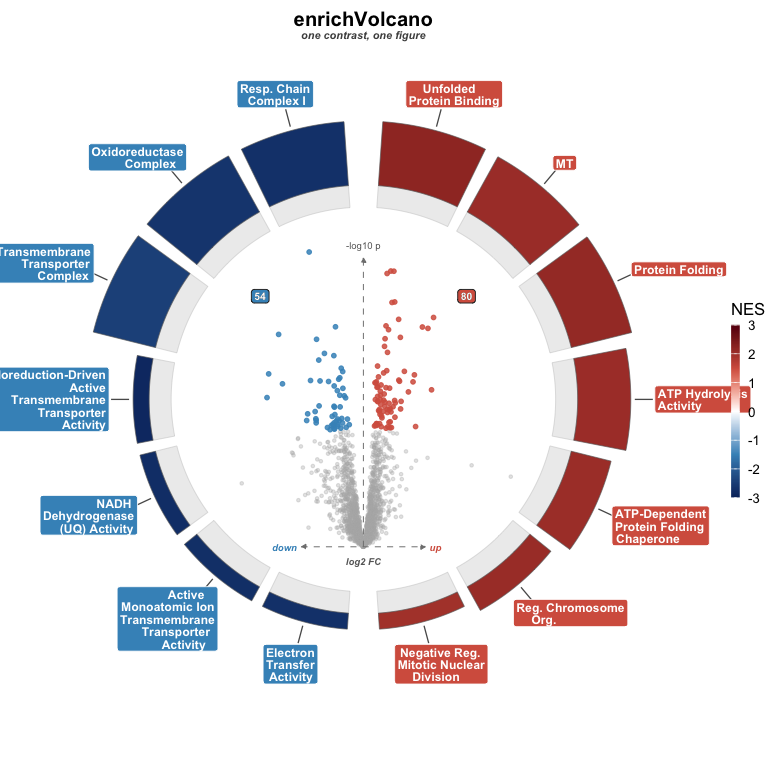

Draw a volcano-in-ring composite from any differential-abundance table plus any enrichment table you’ve already computed.

enrichVolcano is a plotting-only package. It does not run differential abundance, it does not run enrichment, and it ships no gene-set databases. Compute those upstream with whatever fits your study — fgsea, clusterProfiler, enrichR, or your own — and hand the two tidy tables to volcano_ring().
What the plot encodes
A single figure shows, for one contrast:
-
Centre: the differential-abundance volcano.
logFCon x,-log10(p)on y, points coloured up / down / non-significant. -
Ring: one arc per enriched pathway. Arc fill is the NES (red up, blue down by default); arc thickness is a magnitude you pick (
-log10(padj)or gene-set size). - Split: up-regulated pathways sit on the top semicircle, down-regulated on the bottom, so direction reads at a glance.
- Tick lines: thin spokes from each arc to its leading-edge genes inside the volcano, tying a pathway to the proteins driving it.
- Badges: running counts of significant up / down proteins.
volcano_ring_grid() composes several contrasts into a labelled grid with a shared NES legend.
Quick start
library(enrichVolcano)
da <- read.csv(system.file("extdata", "examples", "yvo_da.csv",
package = "enrichVolcano"
))
en <- read.csv(system.file("extdata", "examples", "yvo_enrichment.csv",
package = "enrichVolcano"
))
ctr <- "Training_Young"
da1 <- da[da$contrast == ctr, ]
names(da1)[names(da1) == "adj.P.Val"] <- "padj"
# Pick the pathways to ring the volcano (the table holds many databases).
sig <- en[en$contrast == ctr & en$padj < 0.05 & is.finite(en$NES), ]
sig <- sig[order(sig$padj), ]
top <- rbind(head(sig[sig$NES > 0, ], 7), head(sig[sig$NES < 0, ], 7))
volcano_ring(da1, top, title = "YvO", subtitle = ctr)The whole figure, in one call
volcano_ring_grid() takes a DA table and an enrichment table that each carry a contrast column, splits them, and lays out one composite per contrast with a shared NES legend along the bottom.
da$padj <- da$adj.P.Val
en_sig <- en[en$padj < 0.05 & en$size >= 15, ]
grid <- volcano_ring_grid(da, en_sig, contrasts = unique(da$contrast))
grid$plotEvery spacing knob (panel_spacing, panel_margin, label_headroom, legend_position, legend_width) has a sensible default, so the call above is the whole figure.
Input contract, in brief
| Side | Needs | Default column |
|---|---|---|
DA (volc_df) |
gene id, effect, p, adjusted p |
gene, logFC, P.Value, padj
|
Enrichment (enrich_df) |
term, NES, adjusted p, size |
pathway, NES, padj, size
|
| Tick lines (optional) | leading-edge genes | auto-detected from leading_edge / leadingEdge / core_enrichment / Genes
|
Every column name is an argument, so non-default schemas work without renaming. See vignette("input-contract") for the limma / DESeq2 / edgeR / DEP / fgsea / clusterProfiler / enrichR cross-walk.
Customizing
Colours come from volcano_ring_theme() (the palette presets, or your own up / down / ns / nes_colors). Layout comes from volcano_ring() arguments such as arc_order, arc_height_range, show_counts, magnitude, and label_mode. Everything has a sensible default:
volcano_ring(da1, en1,
theme = volcano_ring_theme(palette = "okabe"),
arc_order = "nes", show_counts = FALSE
)vignette("customizing") walks every knob section by section.
Public API
| Function | Role |
|---|---|
volcano_ring() |
one composite for one contrast — returns a ggplot
|
volcano_ring_grid() |
a grid of composites, one per contrast |
volcano_ring_theme() |
theme + palette factory, with colour overrides |
print.volcano_ring_grid() |
print method for the grid object |
Cite the upstream tools
enrichVolcano only draws; the methodological credit belongs to the enrichment tool you ran:
-
fgsea— Korotkevich G et al. 2021, DOI 10.1101/060012 -
clusterProfiler— Wu T et al. 2021 Innovation -
enrichR— Chen EY et al. 2013 BMC Bioinformatics; Kuleshov MV et al. 2016 Nucleic Acids Res
Useful when choosing what to run and how to read it:
- Xiao Y et al. 2014 Bioinformatics 30(6):801-7, PMID 22321699 — π-value
- Timmons JA et al. 2015 Genome Biol 16:186, PMID 26346307 — ORA universe
- Reimand J et al. 2019 Nat Protoc 14:482-517, PMID 30664679 — protocol
- Wijesooriya K et al. 2022 PLoS Comput Biol 18:e1009935, PMID 35263338 — background bias
Versioning
Current release is v0.3.0. The pre-0.3 enrichment engine and standalone volcano / ring wrappers are gone; the old enrich_volcano() and GUI stay installable from the v0.2.0 tag.